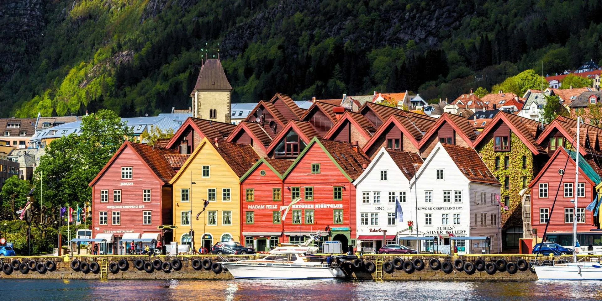

Noruega es un país soberano de Europa del Norte cuya capital es Oslo, por su alta calidad de vida y sus profundos fiordos.
Datos Principales:
Capital: Oslo.
Población: Cerca de 5.6 millones de habitantes.
Gobierno: Monarquía constitucional.
Moneda: Corona noruega.
Idioma oficial: Noruego.
Himno Nacional: "Ja, vi elsker dette lande"
Ja, vi elsker dette landet,
som det stiger frem,
furet, værbitt over vannet,
med de tusen hjem.
Elsker, elsker det og tenker
På vår far og mor
Og den saganatt som senker
Drømme på vår jord.
Og den saganatt som senker,
Senker drømme på vår jord.
II
Dette landet Harald berget
med sin kjemperad,
dette landet Håkon verget
medens Øyvind kvad;
Olav på det landet malte
korset med sitt blod,
fra dets høye Sverre talte
Roma midt imot.
III
Bønder sine økser brynte
hvor en hær dro frem,
Tordenskiold langs kysten lynte,
så det lystes hjem.
Kvinner selv stod opp og strede
som de vare menn;
andre kunne bare grede,
men de kom igjen!
IV
Visstnok var vi ikke mange,
men vi strakk dog til,
da vi prøvdes noen gange,
og det stod på spill;
ti vi heller landet brente
enn det kom til fall;
husker bare hva som hendte
ned på Fredrikshald!
V
Hårde tider har vi døyet,
ble til sist forstøtt;
men i verste nød blåøyet
frihet ble oss født.
Det gav faderkraft å bære
hungersnød og krig,
det gav døden selv sin ære -
og det gav forlik.
VI
Fienden sitt våpen kastet,
opp visiret for,
vi med undren mot ham hastet,
ti han var vår bror.
Drevne frem på stand av skammen
gikk vi søderpå;
nu vi står tre brødre sammen,
og skal sådan stå!
VII
Norske mann i hus og hytte,
takk din store Gud!
Landet ville han beskytte,
skjønt det mørkt så ut.
Alt hva fedrene har kjempet,
mødrene har grett,
har den Herre stille lempet
så vi vant vår rett.
VIII
Ja, vi elsker dette landet,
som det stiger frem,
furet, værbitt over vannet,
med de tusen hjem.
Og som fedres kamp har hevet
det av nød og seir,
også vi, når det blir krevet,
for dets fred slår leir.
Paisajes de Noruega

Refranes Populares:
- "Det finnes ikke dårlig vær, bare dårlige klær" No existe el mal tiempo, solo la ropa inadecuada.
- "Det er typisk norsk å være god" Es típico de los noruegos ser buenos.
- "Uten mat og drikke, duger helten ikke" Sin comida y bebida, el héroe no puede rendir.
- "Å være på bærtur" Ir a recoger bayas.
- "Holde tunga rett i munnen" Mantener la lengua recta en la boca. á
Fraces celebres:
Frase de "Henrik Ibsen" dramaturgo y poeta noruego.
"¿Cuál es el primer deber del hombre? La respuesta es muy breve: ser uno mismo."
"Nuestra sociedad es masculina, y hasta que no entre en ella la mujer no será humana."
"El hombre más fuerte del mundo es el que está más solo."
"No se graban tanto mil palabras como un solo hecho."
"Si no puedes ser lo que eres, sé con sinceridad lo que puedas."
video de noruega
Paises limitrofes:
- Suecia
- Finlandia
- Rusia
Ranking Demografico:
- Oslo: ~1.082.000 habitantes
- Bergen: ~294.000 habitantes
- Trondheim: ~216.000 habitantes
- Stavanger: ~151.000 habitantes
- Kristiansand: ~117.000 habitantes
- Drammen: ~106.000 habitantes
| Región (Landsdel) | Provincia (Fylke) | Densidad Poblacional (hab/km²) |
| Østlandet (Este) | Oslo | ~1.709 |
| Akershus | ~127 | |
| Østfold | ~79 | |
| Buskerud | ~18 | |
| Vestfold | ~119 | |
| Telemark | ~11,6 | |
| Innlandet | ~7,3 | |
| Sørlandet (Sur) | Agder | ~19,7 |
| Vestlandet (Oeste) | Rogaland | ~54,2 |
| Vestland | ~19,4 | |
| Møre og Romsdal | ~19,0 | |
| Trøndelag (Centro) | Trøndelag | ~11,6 |
| Nord-Norge (Norte) | Nordland | ~6,3 |
| troms | ~6,6 | |
| finnmark | ~1,5 |
Paginas Oficialles
Portal del Gobierno
Embajada de noruega en argentina

| 1 | 2 | 3 |
| 4 | 5 | 6 |
| 7 | 8 | 9 |
| 1 | 2 | |
| 3 | 4 | 5 |
| 6 | ||